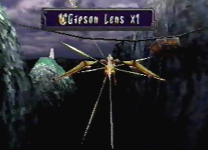
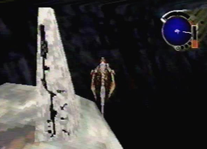
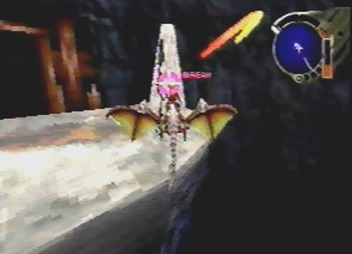
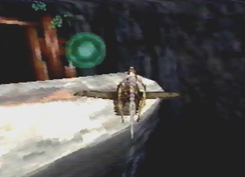
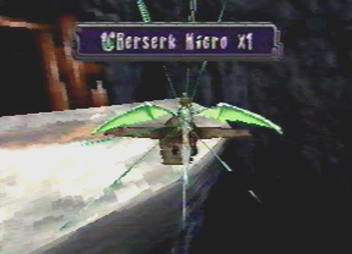
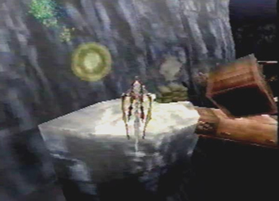
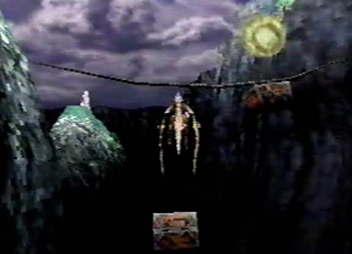
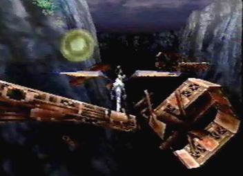

The Dragon's Special Ability to Store Items as a Storage Unit:
Turning Solid Objects into Pure Energy Theory
 |
When playing Panzer Dragoon Saga, did you ever notice the manner in which your dragon receives an item? Well, first, a lock-on laser is fired at the Ancient Age item container. Second, The container immediately opens, and a stream of shinning pure energy emerges from the confines of the container. Last, the item in the form of pure energy, enters the Dragon’s body, followed by multiple beams of light shooting off from all directions. The item gets absorbed. Observing this process, has lead me to believe that the Dragon has the special ability to store items, as a storage unit. When approaching an item container, not just Ancient Age item containers, whether it be ordinary objects, such as: mine carts, Kuo Pollen, Villatuya Fruit or massive Albertson Fans, the Dragon shoots a lock-on laser at the object. The Lock-on laser then retrieves the item or items inside. Whatever it may be, the Dragon then turns that item into pure energy, which it then absorbs into it’s body for storage. This is very much like how we ourselves store files, on a computer hard drive, just considerably more advanced. So much so, that the items stored aren’t just data files, but actual solid objects that exist in the real world of PDS. This would most certainly come in handy on Edge’s adventures. The Dragon would acquire a magnitude of helpful items, and just store them inside its body in the form of energy. When Edge needed to use an item, the Dragon would just have to rematerialize that item from the contents of its internal storage unit, back to its original Solid form. Very convenient if you ask me. The Ancients had to be
an incredibly advanced society, to make a living breathing hard drive!
|
 An Ancient Age Item Container. |
 The Dragon Shoots its lock-on laser fire at the container. |
 The solid item inside is converted into pure energy. |
 The energy is absorbed into the dragons body. |
 The items found in the Ancient Age containers, aren't just the only solid objects to be converted into energy. The item within this mine cart was was converted as well. Note: You may notice that the energy stream is yellow instead of green. This is because items with yellow energy streams are items which can be sold. |
 The Dragon gets an item from a hanging mine cart. |
 An item is receieved from on of the many Albertson fans, found in Excavation Site # 4. |